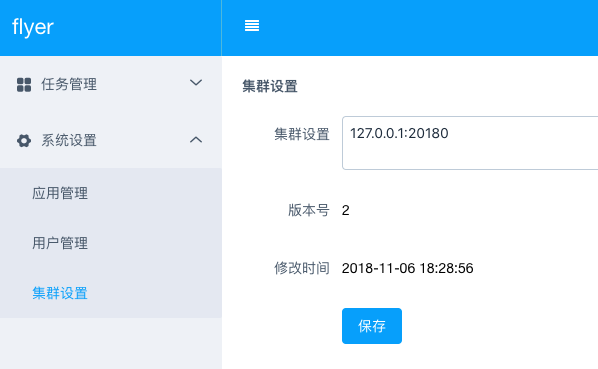
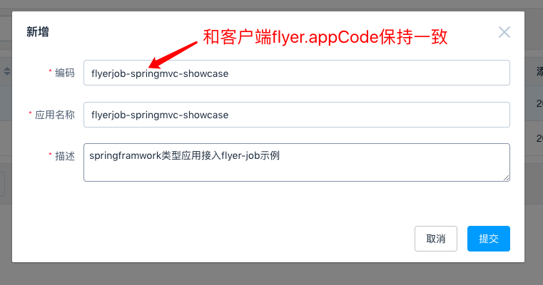
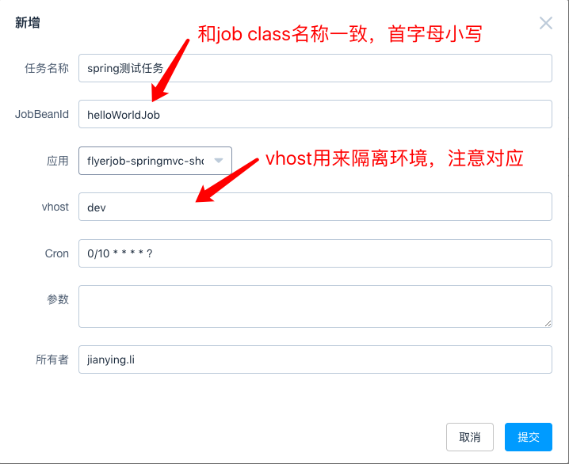
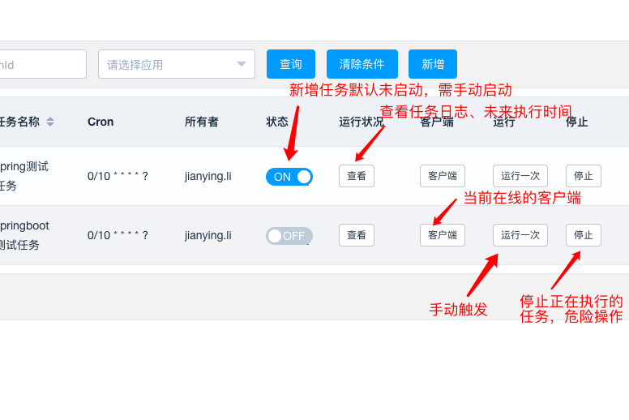
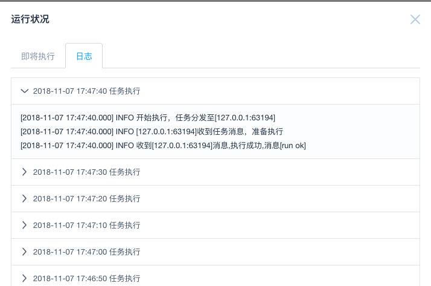
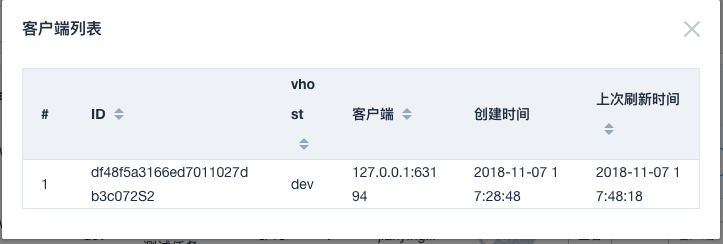
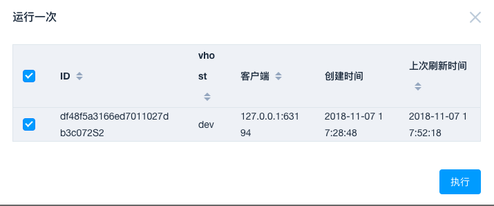

在此之前
flyer job暂时只支持spring环境(springframwork,springboot)接入
客户端
引入依赖
flyer-job-client暂时还没上传至maven官方仓库
<dependency>
<groupId>io.github.vancefantasy</groupId>
<artifactId>flyer-job-client</artifactId>
<version>0.0.1</version>
</dependency>
配置
//properties
//note:加载properties文件时，请将ignoreUnresolvablePlaceholders设置为true
flyer.appCode=flyerjob-springmvc-showcase
flyer.servers=127.0.0.1:20180
flyer.vhost=dev
//for springframwork
<bean class="com.elong.flyer.client.FlyerClientContext"/>
//for springboot
@Bean
public FlyerClientContext registerBean() {
return new FlyerClientContext();
}
HelloWorldJob.java
package com.flyer.job.example.jobs;
import com.flyer.job.client.FlyerJob;
import com.flyer.job.client.FlyerResult;
import org.slf4j.Logger;
import org.slf4j.LoggerFactory;
import org.springframework.stereotype.Component;
@Component
public class HelloWorldJob extends FlyerJob {
private final static Logger log = LoggerFactory.getLogger(HelloWorldJob.class);
@Override
public FlyerResult execute(String param) throws Exception {
log.info("HelloWorldJob run ok");
return new FlyerResult(FlyerResult.Result.SUCCESS, "run ok");
}
}
服务端&控制台
设置集群

添加应用

添加任务

任务管理

运行状况

客户端列表

运行一次
